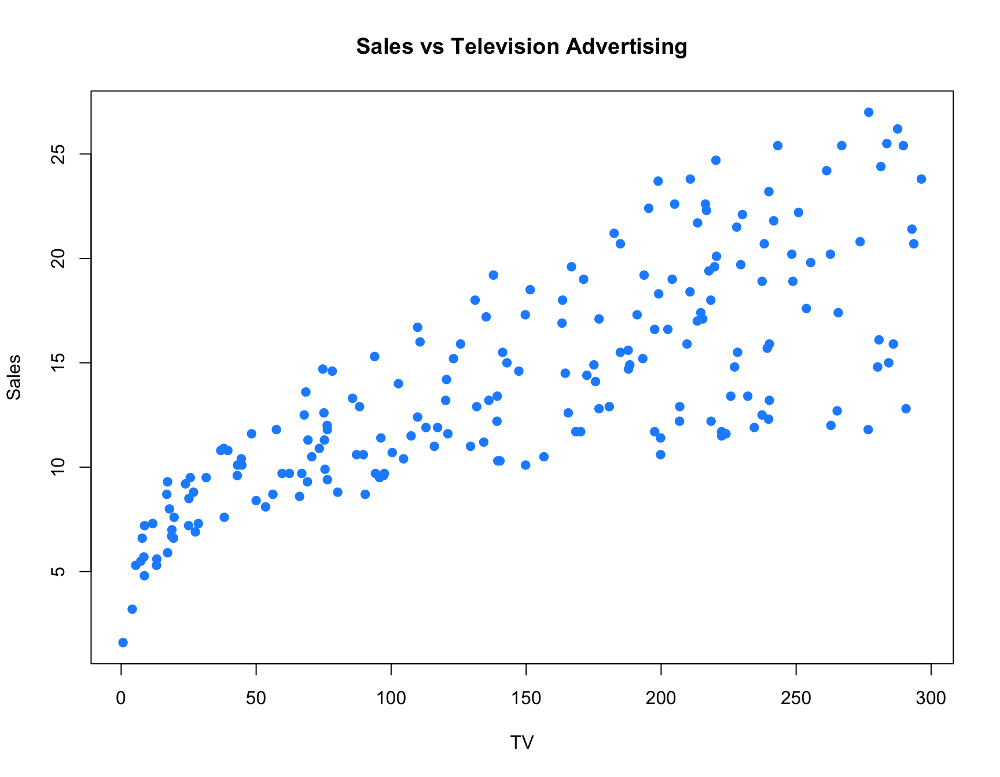
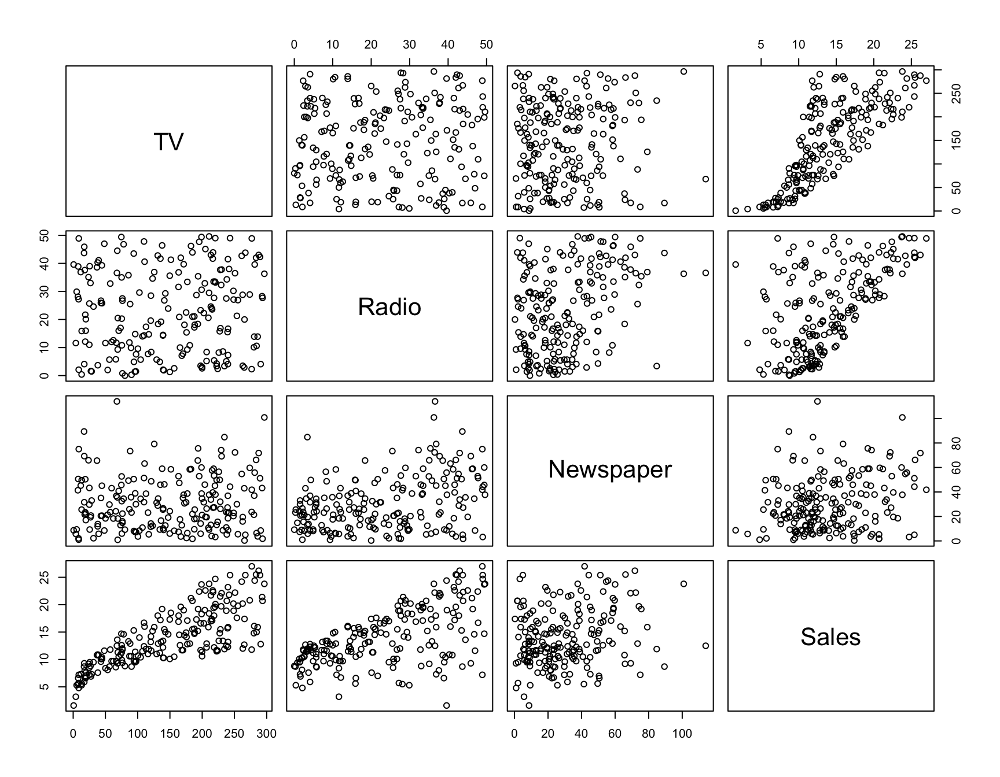
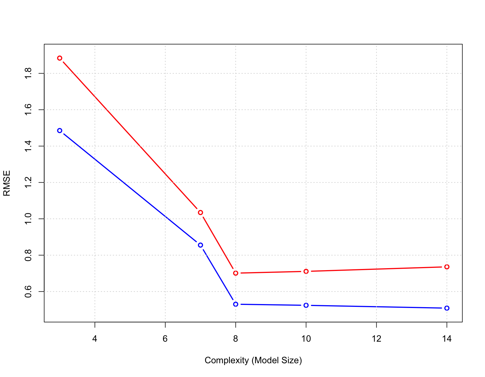

rmse = function(actual, predicted) {
sqrt(mean((actual - predicted) ^ 2))
}Linear Regression II
Evaluate Model Performance
Our goal is to run a few models of different complexity and evaluate the performance based on a test-train split of the data. Can you understand why we do not use the full data to test the different models?
We will start by creating a function that allows us to assess model performance:
We will also use a function that gives the complexity of the linear model as number of independent variables defined.
get_complexity = function(model) {
length(coef(model)) - 1
}Can you understand why we take -1 in the above function?
Data
We will use the Advertisement data from ISLR2 which is in a compressed folder for download. Make sure you have set the correct working directory for reading the data. You can also load the data from the ISLR2 package. The Advertising data set consists of the sales of that product in 200 different markets, along with advertising budgets for the product in each of those markets for three different media: TV, radio, and newspaper.
library(readr) # install if not in your library
Advertising = read_csv("03-data/Advertising.csv")
knitr::kable(head(Advertising,10)) # look at 10 first rows of data| TV | Radio | Newspaper | Sales |
|---|---|---|---|
| 230.1 | 37.8 | 69.2 | 22.1 |
| 44.5 | 39.3 | 45.1 | 10.4 |
| 17.2 | 45.9 | 69.3 | 9.3 |
| 151.5 | 41.3 | 58.5 | 18.5 |
| 180.8 | 10.8 | 58.4 | 12.9 |
| 8.7 | 48.9 | 75.0 | 7.2 |
| 57.5 | 32.8 | 23.5 | 11.8 |
| 120.2 | 19.6 | 11.6 | 13.2 |
| 8.6 | 2.1 | 1.0 | 4.8 |
| 199.8 | 2.6 | 21.2 | 10.6 |
Explore the data by doing some plots. Example shown below.
plot(Sales ~ TV, data = Advertising, col = "dodgerblue", pch = 20, cex = 1.5,
main = "Sales vs Television Advertising")
We can also explore the data by using a correlation matrix plot:
pairs(Advertising)
What are the main patterns you detect?
Test-Train Split
We will now split the data in two. One part of the datasets will be used to fit (train) a model, which we will call the training data. The remainder of the original data will be used to assess how well the model is predicting, which we will call the test data.
We use the sample() function to obtain a random sample of the rows of the original data. We then use those row numbers (and remaining row numbers) to split the data accordingly. Notice we used the set.seed() function to reproduce the same random split each time we perform this analysis.
set.seed(1)
num_obs = nrow(Advertising)
train_index = sample(num_obs, size = trunc(0.50 * num_obs))
train_data = Advertising[train_index, ]
test_data = Advertising[-train_index, ]The Model
We start by fitting the simplest linear model, a model with no predictors:
fit_0 = lm(Sales ~ 1, data = train_data)
get_complexity(fit_0)[1] 0As seen, the complexity of this model is 0. We compute the Test and Train RMSE for this model, via the function specified above and a direct formula:
# train RMSE
rmse(actual = train_data$Sales, predicted = predict(fit_0, train_data))[1] 5.297333sqrt(mean((train_data$Sales - predict(fit_0, train_data)) ^ 2))[1] 5.297333# test RMSE
rmse(actual = test_data$Sales, predicted = predict(fit_0, test_data))[1] 5.112073sqrt(mean((test_data$Sales - predict(fit_0, test_data)) ^ 2)) [1] 5.112073Let’s make the computations of RMSE even more easy by using the below function:
# train RMSE
get_rmse = function(model, data, response) {
rmse(actual = subset(data, select = response, drop = TRUE),
predicted = predict(model, data))
}Can you figure out how to use the above function?
We will fit 5 models, compute the train and test MSE for each model to evaluate it and visualize how it relates to the complexity (i.e. model size in terms of parameters) of the model. Furthermore, we will interpret the results in terms of underfitting or overfitting. We will conclude with dertemrineing which model to choose. The five models to fit are listed below:
Sales ~ Radio + Newspaper + TVSales ~ Radio * Newspaper * TVSales ~ Radio * Newspaper * TV + I(TV ^ 2)Sales ~ Radio * Newspaper * TV + I(TV ^ 2) + I(Radio ^ 2) + I(Newspaper ^ 2)Sales ~ Radio * Newspaper * TV + I(TV ^ 2) * I(Radio ^ 2) * I(Newspaper ^ 2)
Note that the specification first*second indicates the cross of first and second. This is the same as first + second + first:second.
We fit all five models and print the output by creating a list of the model fits. We then obtain train RMSE, test RMSE, and model complexity for each. Finally, plot the results. The train RMSE can be seen in blue, while the test RMSE is given in orange.
fit_1 = lm(Sales ~ Radio + Newspaper + TV, data = train_data)
fit_2 = lm(Sales ~ Radio * Newspaper * TV, data = train_data)
fit_3 = lm(Sales ~ Radio * Newspaper * TV + I(TV ^ 2), data = train_data)
fit_4 = lm(Sales ~ Radio * Newspaper * TV +
I(TV ^ 2) + I(Radio ^ 2) + I(Newspaper ^ 2), data = train_data)
fit_5 = lm(Sales ~ Radio * Newspaper * TV +
I(TV ^ 2) * I(Radio ^ 2) * I(Newspaper ^ 2), data = train_data)
model_list = list(fit_1, fit_2, fit_3, fit_4, fit_5)
#model_list #uncomment if you wish to see this list object
train_rmse = sapply(model_list, get_rmse, data = train_data, response = "Sales")
test_rmse = sapply(model_list, get_rmse, data = test_data, response = "Sales")
model_complexity = sapply(model_list, get_complexity)
train_rmse = sapply(model_list, get_rmse, data = train_data, response = "Sales")
test_rmse = sapply(model_list, get_rmse, data = test_data, response = "Sales")
model_complexity = sapply(model_list, get_complexity)
plot(model_complexity, train_rmse, type = "b",
ylim = c(min(c(train_rmse, test_rmse)) - 0.02,
max(c(train_rmse, test_rmse)) + 0.02),
col = "blue",
lwd = 2,
xlab = "Complexity (Model Size)",
ylab = "RMSE")
lines(model_complexity, test_rmse, type = "b", col = "red", lwd = 2)
grid()
Conclusion:
Underfitting models: In general High Train RMSE, High Test RMSE. Seen in fit_1 and fit_2.
Overfitting models: In general Low Train RMSE, High Test RMSE. Seen in fit_4 and fit_5.
We see that the Test RMSE is smallest for fit_3, and it is the model we believe will perform the best on future data not used to train the model.
Exercises
Write functions for the some of the other loss functions we covered in the lecture (e.g. MAE, MAPE). Apply them to asses the same five models above. Do you see similar or deviant results in terms of overfitting/underfitting?
Replicate the simulation example from lecture. Try other models based on different order polynomials.